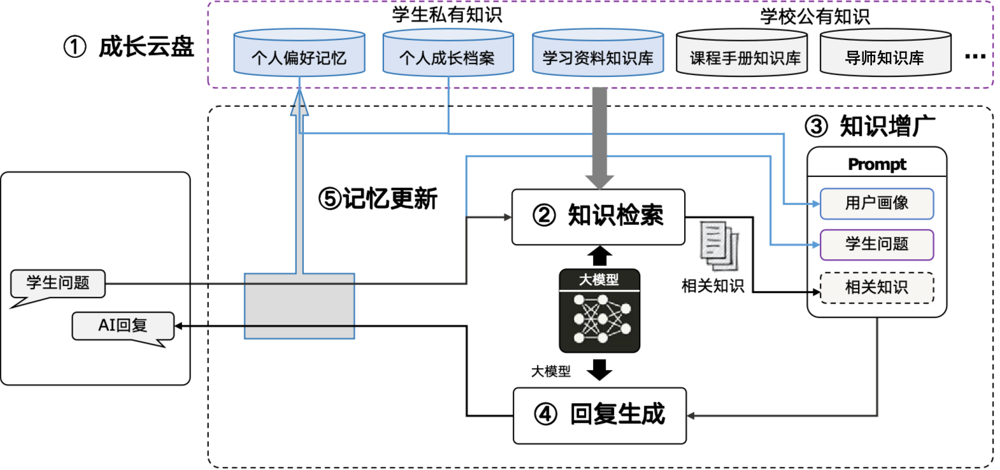

清小搭框架介绍
清小搭的算法服务是基于 UltraRAG 框架开发。基于清华大学的高质量知识库，实现了知识库问答、工具调用和Webnote三大功能，帮助清华学子解决学习和生活中的问题。截至目前，清小搭的问答正确率已经实现了90+%的问答正确率。为了帮助感兴趣的同学深入了解清小搭，现将清小搭的整体框架做个整体上的介绍。
知识问答
原理介绍
清小搭的知识问答覆盖了检索问答、问题推荐、 来源引用、个性化回复等功能，各自负责的功能为：
- 检索问答： 明确用户问题，检索清小搭知识库，引用最新的知识片段回答用户问题
- 问题推荐 根据用户的提问，推荐其后续更加感兴趣的问题
- 来源引用 对于清小搭的回复，标注名引用的文章来源，并且在源文档高亮参考的文本信息
- 个性化回复 结合个人成长档案，给出个性化回复

效果展示


智能摘录
原理介绍
智能摘录功能是UltraRAG2.0中的算法之一，可以理解成是知识问答的高级演进，它不仅仅是简单的“检索+生成”，更强调 自主的、迭代的、多步骤的推理和探索过程。 它通常结合了代理式RAG的理念，即LLM作为一个“研究代理”，能够自主地规划、执行、评估并调整其研究策略。和清小搭的主干链路（知识问答）相比，智能摘录有以下几个优势：
多步推理和动态规划： 这是 智能摘录 最核心的优势。它能将复杂问题分解为多个子问题，并为每个子问题制定检索和分析计划。它可以根据中间结果动态调整后续的检索策略和分析方向，类似人类研究员的思维过程。
主动探索和发现： 智能摘录 不仅仅是根据关键词检索，它能主动探索相关概念、寻找潜在的联系、甚至发现新的洞察，超越了简单问答的范畴。
信息综合与交叉验证： 能够从多个来源获取信息，进行复杂的综合、比较和交叉验证，识别信息中的不一致或冲突，从而提供更全面、更可靠的笔记。
更高质量的笔记生成： 最终输出的不仅仅是答案，而通常是结构化、多章节的“笔记”。
智能摘录的主要技术流程是，首先根据用户的问题进行分析，生成一个笔记撰写计划和一个笔记的大纲，然后针对笔记中的每个章节，检索相关信息，并完成章节的撰写，最后结合笔记，生成一个完整的、有深度的答案。下图是一个智能摘录的工作示例。

效果展示
为了更加直观的展示清小搭的回答过程，以下给出了一段演示视频。
适用场景
智能笔记适用于问题较为开放、宽泛、期望得到系统回复的场景。
MCP工具调用
清小搭采用了先进的智能代理（Agentic）架构，通过迭代式的工具调用流程来高效解决用户问题。整个流程体现了AI从理解问题到最终回复的完整思考与执行过程。
用户查询接收
流程始于用户向清小搭提出具体问题或需求。系统会接收并解析用户的查询内容，这是整个问题解决过程的起点。
智能思考阶段
接收到用户查询后，清小搭会进入深度思考阶段：
-
问题分析：理解用户真实意图和核心需求
-
策略制定：判断是否需要调用外部工具
-
方案规划：确定解决问题的整体思路和方法
执行计划制定
基于思考结果，系统会生成具体的执行计划：
-
工具选择：确定需要使用哪些工具
-
执行顺序：规划工具调用的先后顺序
-
参数准备：准备工具调用所需的参数信息
工具执行阶段
这是流程的核心环节，清小搭会根据计划调用相应的工具：
可用的工具类型包括：
-
高德地图服务：提供地理位置查询、路线规划、周边搜索等功能
-
网页检索工具：从互联网获取最新信息和数据
-
网页生成工具：创建和生成网页内容
-
其他专业工具：根据具体需求调用的各种专业服务
结果反思阶段
工具执行完成后，清小搭会进入反思阶段：
-
结果评估：分析工具执行的结果质量
-
问题诊断：判断是否完全解决了用户问题
-
策略调整：决定是否需要进一步优化或补充
迭代优化机制
反思阶段会产生两种结果：
继续执行： - 如果问题尚未完全解决，系统会重新进入思考阶段 - 调整执行策略，可能需要调用其他工具或优化参数 - 形成迭代循环，直到问题得到充分解决
执行完毕： - 当反思确认问题已得到满意解决时，流程进入最终阶段
用户回复生成
最后，清小搭会： - 信息整合：将多个工具的执行结果进行综合处理
-
内容优化：生成用户友好的回复格式
-
结果交付：向用户提供完整、准确的解决方案

技术特点与优势
智能迭代：整个流程采用迭代式设计，能够根据中间结果动态调整策略，确保问题得到最优解决。
工具多样性：集成了地图服务、网络检索、内容生成等多种工具，覆盖用户的各种需求场景。
反思机制：内置的反思环节确保每次工具调用都有明确的目标和效果评估。
用户导向：整个流程始终以解决用户问题为核心，提供高质量的服务体验。
通过这套完整的工具调用流程，清小搭能够像人类专家一样，通过思考、规划、执行、反思的循环过程，智能地解决用户的各种复杂问题，体现了现代AI系统的先进性和实用性。
应用场景
MCP工具调用的场景和可用的工具有关，目前适用的场景是路线导航、景点推荐、旅游规划以及实时新闻查询等类型的问题。